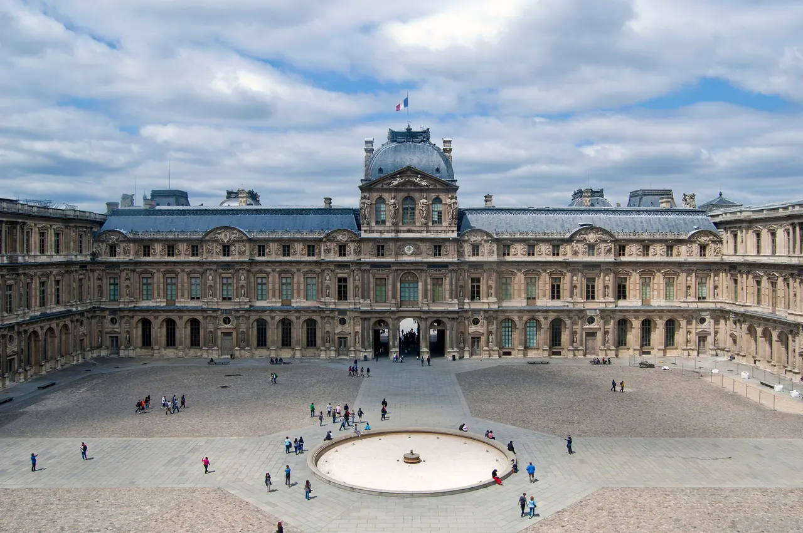

Musée du Louvre

| 지역 | Paris |
|---|---|
| 등급 | 필수 |
| 언제 | 일정에 배정된 날을 시간표에서 찾지 못했다 |
| 상세 | 챕터 본문에서 보기 |
| 지도 | Paris 실행지도 · 핀 이름 Louvre |
참고
오프라인입니다. 위키백과와 지도 링크는 연결되면 다시 동작합니다.
Day 31 (9/28 월)
원칙 — 완주하지 않는다
Louvre — 필수, 1회만과 금지 규칙을 유지한다.
루브르는 하루에 다 볼 수 없다. 시도하면 아무것도 못 본다.
금지 규칙 - 지도를 펴고 "다 보는" 계획을 세우지 않는다 - 모나리자 앞에서 오래 머물지 않는다 — 사진 찍고 지나간다 - 두 번째 방문을 계획하지 않는다. 1회만
화요일 휴관이라 월요일에 배정했다
루브르는 화요일에 닫는다. Day 31이 월요일이라 정상 운영이다.
다만 월요일도 붐빈다. 다른 미술관이 월요일에 많이 닫기 때문에 관람객이 루브르로 몰린다. 시간지정 예약이 필수다.
실용 — 저장소 자료 기준
| 항목 | 값 |
|---|---|
| 접근 | Palais Royal–Musée du Louvre 역 |
| 관람 | 한 시대·한 동선만 정하고 3시간 30분 상한 |
| 체류 | 3–3.5시간 |
| 요금 | 2026 비EEA 성인 약 €32 안내 예약 화면에서 재확인 |
| 주의 | 월요일 개관·화요일 휴관 등 요일 확인 · 대형가방 |
관람 루트는 Jason·Julia 추천 관람 루트를 따른다.
야간 개장 요일 확인 필요